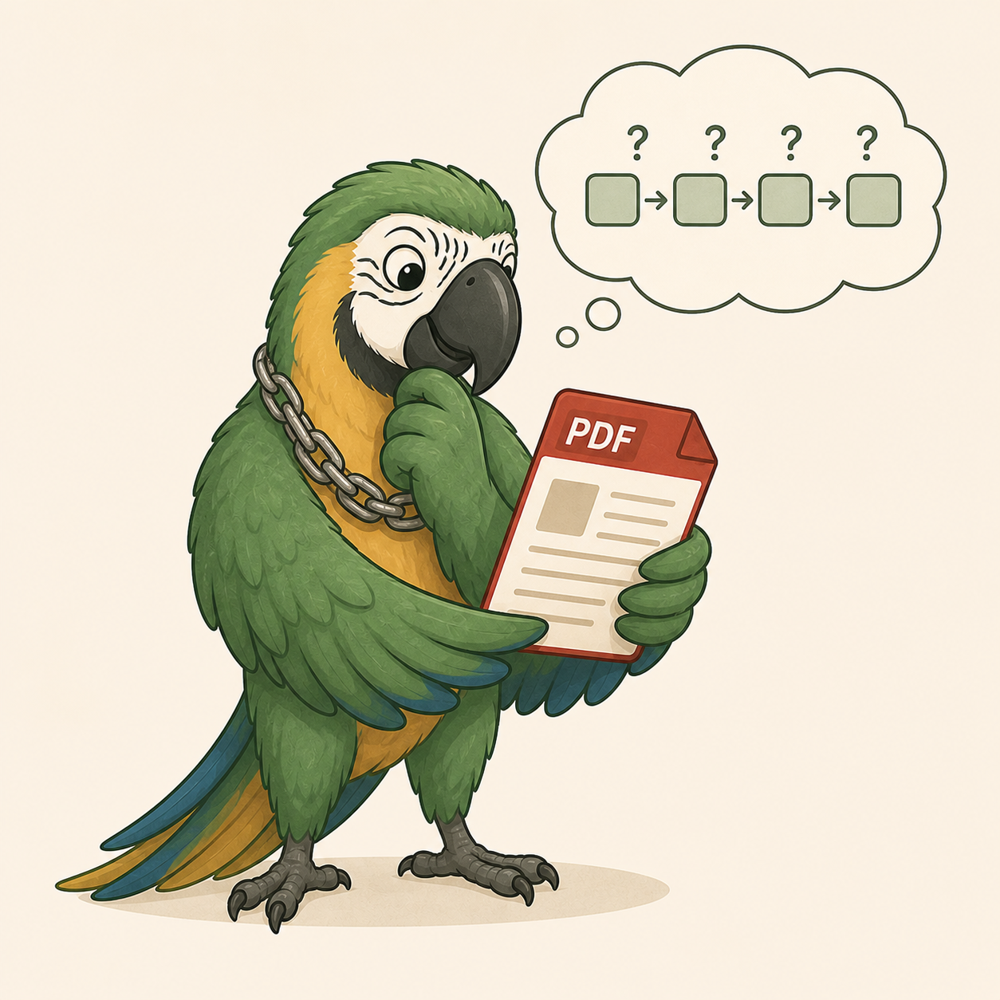

from langchain_core.prompts import ChatPromptTemplate
from langchain_openai import ChatOpenAI
from langchain_core.output_parsers import StrOutputParser
prompt = ChatPromptTemplate.from_template("Hola {name}")
llm = ChatOpenAI()
parser = StrOutputParser()
chain = prompt | llm | parser
result = chain.invoke({"name": "world"})


def _retrieve(
self,
query: str,
where: dict | None = None,
where_document: dict | None = None,
) -> list[Document]:
# Idiomatic Langchain: build a Retriever, not a raw similarity call.
# Retrievers are Runnables (composable with LCEL) and accept both the
# metadata `filter` and Chroma's `where_document` via search_kwargs.
search_kwargs: dict = {"k": TOP_K_PER_QUERY}
if where is not None:
search_kwargs["filter"] = where
if where_document is not None:
search_kwargs["where_document"] = where_document
retriever = get_vectorstore().as_retriever(search_kwargs=search_kwargs)
return retriever.invoke(query)